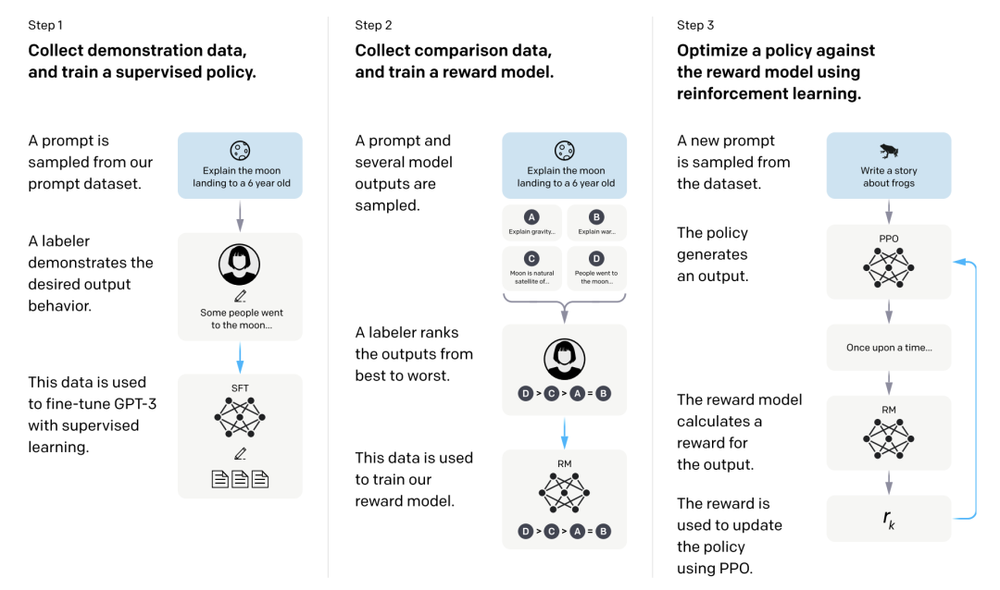
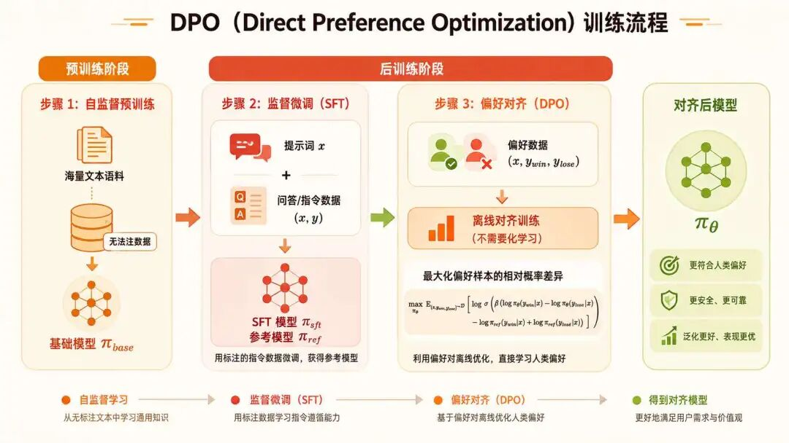
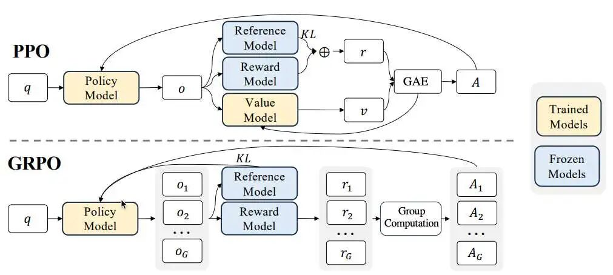

“AI 竞争的本质是原创与模仿的代差，而非表面性能的追赶。”——DeepSeek创始人梁文锋
PPO算法以其一阶优化的创新性方法大幅提升了策略更新的稳定性，同时提出了重要性采样+GAE的强化学习新范式。
而PPO的真正大放异彩是在大语言模型时代，它成为了RLHF技术路线中的关键优化算法。
在传统的RLHF流程中，奖励模型是固定不变的。然而，被优化的策略模型（即LLM本身）在不断更新，它生成的文本分布也在持续变化。这意味着，奖励模型看到的输入分布在不断“漂移”，导致其产生的奖励信号是非静态的。
PPO作为一种On-policy（在线策略） 算法，其核心优势在于它只使用当前策略最新生成的数据进行学习。这使得它能天然适配这种非静态的奖励环境，因为旧数据不会干扰新策略的学习，从而避免了经验回放缓冲区中数据过时带来的污染。
PPO的成功应用确立了SFT（监督微调）、 RM（奖励模型训练）、 RL（强化学习优化，特指PPO） 这一三阶段流程，成为RLHF的经典配方。
要了解PPO在RLHF中发挥的作用，我们就要先学习什么是RLHF。
RLHF是一种将大型语言模型的行为与复杂、主观的人类价值观和目标对齐的技术。它的核心思想在于，利用人类的直接反馈来指导模型优化，从而解决许多任务（如“让回答更有趣或更有帮助”）难以用精确的数学规则定义的难题。
RLHF的核心价值在于，它使AI系统不仅能执行任务，还能在符合人类价值观和意图的框架下执行任务。RLHF的训练过程一般分为以下三个阶段。

此阶段是RLHF的预备步骤。目标是让一个通用的预训练语言模型初步具备遵循指令和与用户对话的能力。通过使用大量由人类专家编写的（提示，理想回答）配对数据对模型进行有监督的训练，模型学习到的不再仅仅是预测下一个词，而是如何针对给定的指令做出恰当、有用、格式正确的回应。这个过程类似于给模型提供“标准答案”，让它先学会“好好说话”。
这是RLHF区别于传统方法的精髓所在。许多我们期望模型具备的品质（如“有趣”、“有创意”、“公正”）很难用明确的规则编程。RLHF巧妙地通过以下步骤解决这个问题：
步骤1：收集偏好数据：对于同一个提示，让模型生成多个不同的回答，然后由人类标注员根据偏好对这些回答进行排序或选择。这种方式比直接让人类打分更可靠，因为人们更擅长比较而非绝对评分。
步骤2：训练奖励模型：利用这些偏好比较数据，训练一个专门的模型（即奖励模型）。该模型学会预测人类会更喜欢哪个回答。训练完成后，这个奖励模型可以像“裁判”一样，为任何一个新生成的（提示，回答）对给出一个代表质量的分数（奖励值）。
这是最复杂的环节。我们将上一步得到的SFT模型视为需要优化的“智能体”（Actor），其行动空间是整个词表，策略是它预测下一个词的概率分布。优化过程如下：
步骤1：生成与评估：智能体针对一系列提示生成回答，并由奖励模型为每个回答打分。
步骤2：策略优化与约束：使用PPO等强化学习算法，根据获得的奖励分数更新模型参数，目标是最大化期望的总奖励。为了防止模型过度“钻营”奖励模型，例如生成看似高分但无意义的胡言乱语，会引入一个参考模型（即冻结的SFT模型）并通过KL散度进行约束，确保优化后的模型不会偏离其初始的良好语言能力太远。
步骤3：价值评估：通常还会引入一个评论家模型（Critic），其任务是预测从当前状态开始能获得的未来总奖励，帮助更稳定地计算策略更新的优势（Advantage）。
尽管PPO在强化学习阶段发挥了至关重要的作用，然而，这套流程也暴露出PPO的局限性：训练流程复杂、计算成本高昂，且对超参数敏感。这些痛点催生了DPO、GRPO等一系列新算法的探索。
首先是计算开销太大了，PPO需维护与策略模型（Actor）规模相当的价值网络（Critic），导致显存占用翻倍。例如训练70B模型时，Critic模型额外消耗数十GB显存，极大限制了模型规模与训练效率。
其次是PPO的性能高度依赖奖励模型的准确性，而奖励模型本身需大量高质量偏好数据训练，成本高昂且易引入偏差。
另外PPO需要同时维护和协调四个模型：负责生成文本的策略模型、评估状态价值的价值模型、评判好坏的奖励模型，以及防止策略跑偏的参考模型。这套复杂流程被称为“RLHF四模型舞”。这不仅导致巨大的显存占用，也使得整个训练过程非常笨重，调试困难。
还有一个原因是随着LLM应用向思维链推理、代码生成等复杂任务扩展，PPO方法面临新挑战：在长步骤任务中易因策略突变导致推理链断裂，例如数学解题中途逻辑跳变，且在这个过程中单一奖励信号难以评估多步推理的中间状态，而人类更依赖相对比较（如“解法A优于解法B”）。
为了解决在RLHF阶段遇到的上述问题，AI专家前后分别提出了DPO和GRPO算法。
首先来说DPO算法，DPO的全称是Direct Preference Optimization, DPO，中文名为：直接偏好优化，是由Rafailov、Sharma、Mitchell等研究者在2023年的论文《Direct Preference Optimization: Your Language Model is Secretly a Reward Model》中提出。
DPO的关键洞察非常巧妙：它发现语言模型本身就可以被视为一个隐式的奖励模型。通过一系列严谨的数学推导（主要基于Bradley-Terry偏好模型），DPO将复杂的强化学习优化目标，转换成了一个可以通过标准梯度下降来优化的损失函数。
其训练的核心思想是直接利用人类对模型输出的偏好比较结果（即“优选回答”和“次选回答”）来指导模型优化，而不是像PPO一样需要先训练一个奖励模型来打分。
最终目标是对于给定的提示（prompt），调整模型参数 $\theta$ ，使得模型生成“优选回答”的概率远大于生成“次选回答”的概率。同时，通过一个KL散度惩罚项，确保优化后的模型不会偏离初始的参考模型（通常是一个经过监督微调的模型）太远，从而保持模型原有的语言能力和质量，避免“优化”成只会说“正确废话”的机器。

DPO的数学推导优雅且严谨，它从RLHF的优化目标出发，通过四步变换得到最终形式。
为了帮助理解，我们可以先看看DPO推导的整体思路。DPO的核心策略可以类比为"逆向工程"：
整个过程就像是在解一个方程：原本是"已知奖励，求最优策略"，DPO把它翻转成"已知策略，反推奖励"，最后发现根本不需要单独的奖励模型了。
RLHF的目标是找到一个策略 $\pi_\theta$ ，使其在最大化期望奖励的同时，与参考策略 $\pi_{\text{ref}}$ 的 $KL$ 散度被控制在一定的范围内。用通俗的话说就是：既要讨好人类偏好，又不能太跑偏。其数学表达式为：
$$ \max_{\pi_\theta} \mathbb{E}_{x \sim \mathcal{D}, y \sim \pi_\theta(y|x)} [r(x, y)] - \beta \cdot D_{\text{KL}}(\pi_\theta(y|x) \| \pi_{\text{ref}}(y|x)) $$注释版：
$$ \underbrace{\max_{\pi_\theta}}_{\text{对策略}\pi_\theta\text{取最大化}} \underbrace{\mathbb{E}_{x \sim \mathcal{D}, y \sim \pi_\theta(y|x)}}_{\substack{\text{从数据分布}\mathcal{D}\text{采}x \\ \text{从策略}\pi_\theta\text{采}y\text{取期望}}} \left[ \underbrace{r(x, y)}_{\text{策略奖励函数}} \right] - \underbrace{\beta}_{\text{KL散度惩罚系数}} \cdot \underbrace{D_{\text{KL}}(\pi_\theta(y|x) \parallel \pi_{\text{ref}}(y|x))}_{\text{当前策略与参考策略的KL散度}} $$其中， $r(x, y)$ 是奖励函数， $\beta$ 是控制KL惩罚强度的超参数。这两项合起来，就是RLHF的核心诉求——既要讨好人类偏好，又不能太跑偏。
接下来是DPO推导中最关键的数学技巧。理论分析表明，上述优化问题的最优策略 $\pi^*$ 具有如下"闭式解"（即可以直接写出解析公式，不需要迭代求解）：
$$ \pi^*(y | x) = \frac{1}{Z(x)} \pi_{\text{ref}}(y|x) \exp\left(\frac{1}{\beta} r(x,y)\right) $$注释版：
$$ \underbrace{\pi^*(y | x)}_{\text{最优目标策略}} = \underbrace{\frac{1}{Z(x)}}_{\text{归一化因子（保证概率和为1）}} \cdot \underbrace{\pi_{\text{ref}}(y|x)}_{\text{参考策略}} \cdot \underbrace{\exp\left(\frac{1}{\beta} \underbrace{r(x,y)}_{\text{策略奖励函数}}\right)}_{\text{奖励加权的指数项}} $$其中 $Z(x)$ 是一个配分函数，用于确保 $\pi^*$ 是一个有效的概率分布。
论文推导出来的这个 $\pi^*(y|x)$ 公式，本质是说：不用一步步强化学习试错，直接能算出“最优攻略模型”该长什么样。也就是：
最优模型 = 原模型的回答概率 × 奖励的“好坏加成”，再做归一化（Z(x)）让概率总和为1。
这一步是DPO的"灵光一现"时刻。既然第二步已经给出了"最优策略"的公式，DPO的作者提出了一个反向思考：能不能从这个公式反过来，用策略来表示奖励？
从最优策略的表达式可以反解出奖励函数 $r(x, y)$ ：
$$ r(x, y) = \beta \log \frac{\pi^*(y | x)}{\pi_{\text{ref}}(y | x)} + \beta \log Z(x) $$注释版：
$$ \underbrace{r(x, y)}_{\text{策略奖励函数}} = \underbrace{\beta}_{\text{KL散度惩罚系数}} \cdot \underbrace{\log \frac{\pi^*(y | x)}{\pi_{\text{ref}}(y | x)}}_{\text{最优策略与参考策略的对数概率比}} + \underbrace{\beta}_{\text{KL散度惩罚系数}} \cdot \underbrace{\log Z(x)}_{\text{配分函数的对数项}} $$这个公式其实是在说：模型的输出概率本身，就可以代表“奖励分”。好攻略的输出概率越高，对应的“奖励分”就越高，根本不用单独训练一个奖励模型来打分，这就是隐式奖励的核心。
DPO的作者进一步发现，在基于Bradley-Terry模型的偏好概率公式中，配分函数 $Z(x)$ 会被抵消掉。Bradley-Terry模型将人类偏好概率定义为：
$$ P(y_w \succ y_l | x) = \frac{\exp(r(x, y_w))}{\exp(r(x, y_w)) + \exp(r(x, y_l))} = \sigma(r(x, y_w) - r(x, y_l)) $$注释版：
$$ \underbrace{P(y_w \succ y_l | x)}_{\text{给定输入}x\text{时}y_w\text{优于}y_l\text{的偏好概率}} = \frac{\underbrace{\exp(r(x, y_w))}_{\text{更优输出}y_w\text{奖励的指数项}}}{\underbrace{\exp(r(x, y_w)) + \exp(r(x, y_l))}_{\text{优劣输出奖励的指数项之和}}} = \underbrace{\sigma(r(x, y_w) - r(x, y_l))}_{\text{奖励差值的sigmoid函数}} $$其中 $\sigma$ 为sigmoid函数，输出[0,1]区间概率，将奖励差值映射为偏好概率。
这个公式，就是把“人类更喜欢逻辑清晰的攻略”这件事，转化成数学概率。差值越大，sigmoid函数输出的概率越接近1，代表“人类选好攻略的可能性越高”。
现在到了最后一步。我们已经知道"策略概率比 = 隐式奖励"，接下来只需要把这个隐式奖励代入上面的Bradley-Terry偏好模型，就能得到最终的损失函数。
关键在于，当把隐式奖励 $r(x,y) = \beta \log \frac{\pi_\theta(y|x)}{\pi_{\text{ref}}(y|x)}$ 代入Bradley-Terry模型时，配分函数 $Z(x)$ 会被巧妙地抵消掉（这是整个推导中的另一个"神来之笔"），最终通过最大似然估计得到DPO的损失函数：
$$ \mathcal{L}_{\text{DPO}}(\pi_\theta; \pi_{\text{ref}}) = -\mathbb{E}_{(x, y_w, y_l) \sim \mathcal{D}} \left[ \log \sigma \left( \beta \log \frac{\pi_\theta(y_w|x)}{\pi_{\text{ref}}(y_w|x)} - \beta \log \frac{\pi_\theta(y_l|x)}{\pi_{\text{ref}}(y_l|x)} \right) \right] $$注释版：
$$ \underbrace{\mathcal{L}_{\text{DPO}}(\pi_\theta; \pi_{\text{ref}})}_{\text{DPO损失函数（当前策略}\pi_\theta,\text{参考策略}\pi_{\text{ref}}\text{）}} = -\underbrace{\mathbb{E}_{(x, y_w, y_l) \sim \mathcal{D}}}_{\substack{\text{对偏好数据集}\mathcal{D}\text{中三元组} \\ (x,\text{优输出}y_w,\text{劣输出}y_l)\text{取期望}}} \left[ \underbrace{\log}_{\text{对数运算}} \underbrace{\sigma}_{\text{sigmoid函数}} \left( \underbrace{\beta}_{\text{温度系数}} \underbrace{\log \frac{\pi_\theta(y_w|x)}{\pi_{\text{ref}}(y_w|x)}}_{\text{优输出策略概率比的对数}} - \underbrace{\beta}_{\text{温度系数}} \underbrace{\log \frac{\pi_\theta(y_l|x)}{\pi_{\text{ref}}(y_l|x)}}_{\text{劣输出策略概率比的对数}} \right) \right] $$DPO损失可分解为三部分，物理意义明确：
(1) 偏好增强项：$\log\frac{\pi_\theta(y_w|x)}{\pi_{\text{ref}}(y_w|x)}$ 鼓励模型提高首选响应的相对概率
(2) 偏好抑制项：$-\log\frac{\pi_\theta(y_l|x)}{\pi_{\text{ref}}(y_l|x)}$ 惩罚模型降低非首选响应的相对概率
(3) 强度控制：$\beta$ 调节更新强度，$\beta$ 越大，模型越激进地调整偏好响应的概率比
这个损失函数鼓励模型拉大其对优选回答和次选回答的“相对偏好”（即对数概率比）的差距。
DPO的数学原理揭示了语言模型可同时作为策略生成响应、并作为奖励模型评估响应质量，为大模型偏好对齐提供了简洁而严谨的理论框架。
回顾DPO的四步推导，其精妙之处在于：不需要训练奖励模型，不需要强化学习的反复试错，只需要偏好数据（人类标注哪个回答更好）和标准的梯度下降，就能完成模型对齐。
DPO虽然能够简化RLHF的训练流程，解决四模型舞的问题，但是却无法解决RLHF在思维链推理、代码生成等复杂任务扩展时策略突变、训练不稳定的问题。
为了理解GRPO要解决什么问题，我们可以打个比方：DPO像一个选择题考试，只需要判断哪个回答更好；但在数学推理、代码生成等复杂任务中，我们更需要打分考试，需要评估多个回答的相对优劣。GRPO就是为此而生。
DeepSeek团队在优化数学推理模型DeepSeekMath时，首次提出并验证了GRPO（Group Relative Policy Optimization）算法的有效性，创新性地通过组内相对评估和去Critic两大机制，使得整个算法相比PPO变得更加轻量化。

GRPO的组内相对评估机制是其最核心的创新设计，通过同一问题下多个响应（组）的动态比较替代传统强化学习的绝对价值评估，显著提升了训练效率和稳定性。
传统PPO依赖价值网络（Critic）评估每个响应的绝对价值，而GRPO通过以下三步实现组内相对评估。
为了理解GRPO的思路，我们可以想象一个班级考试的场景：传统PPO就像请了一个"外聘评委"（Critic价值网络）来给每个学生的试卷打绝对分数，但评委水平有限且开销很大；GRPO的做法则是让同一道题的多个解答互相比较，用"组内排名"替代"绝对打分"--不需要外聘评委，只需看谁的解答在组内表现更好。
对每个输入问题 q，从当前策略生成多个候选响应（通常 G=8 或 16），形成组内对比样本池。
这一步的目的是捕捉同一问题的多样解法（如数学题的代数法、几何法），避免单一响应的评估偏差。
举个例子，解方程 $2x + 3 = 7$，生成 G=3 个候选响应：
| 响应 | 生成内容 |
|---|---|
| 响应1 | 步骤：移项得 2x = 4 → x = 2。答案：<answer>2</answer> |
| 响应2 | 步骤：直接计算 2x + 3 = 7 → x = (7-3)/2 = 2。答案：<answer>2</answer> |
| 响应3 | 步骤：错误移项 2x = 7 → x = 3.5。答案：<answer>3.5</answer> |
计算组内奖励的均值 μ 和标准差 σ：
$$ \mu = \frac{1}{G} \sum_{i=1}^{G} r_i, \quad \sigma = \sqrt{\frac{1}{G} \sum_{i=1}^{G} (r_i - \mu)^2} $$这一步的目的是将组均值作为动态基线，标准差用于归一化尺度，消除不同问题间的奖励差异影响。
运用动态基线，首先需要设计奖励规则，例如：
对步骤一中的三个响应进行奖励计算：
| 响应 | 正确性 | 格式 | 总奖励 $r_i$ |
|---|---|---|---|
| 响应1 | 1（正确） | 1（规范） | 0.7 × 1 + 0.3 × 1 = 1.0 |
| 响应2 | 1（正确） | 0（无步骤前缀） | 0.7 × 1 + 0.3 × 0 = 0.7 |
| 响应3 | 0（错误） | 1（规范） | 0.7 × 0 + 0.3 ×1 = 0.3 |
然后计算均值与标准差：
每个响应的优势值通过标准化公式计算：
$$ A_i = \frac{r_i - \mu}{\sigma} $$GRPO为同一输入生成多个候选响应（组），通过组内奖励的统计特性（均值、标准差）计算相对优势：
$$ A_i = \frac{r_i - \mu_{\text{group}}}{\sigma_{\text{group}}} $$注释版：
$$ \underbrace{A_i}_{\text{第}i\text{个样本的标准化优势}} = \frac{\underbrace{r_i}_{\text{第}i\text{个样本的原始优势}} - \underbrace{\mu_{\text{group}}}_{\text{组内优势的均值}}}{\underbrace{\sigma_{\text{group}}}_{\text{组内优势的标准差}}} $$最终相对优势统计如下：
计算得到各个响应的相对优势之后，可以用于指导策略更新：
而更新策略梯度要保障稳定性，这里就涉及到GRPO的第二大机制了：双重稳定性约束。
目前我们已经学习过两种约束，一种是Clip机制实现的裁剪目标函数的约束，一种是通过KL散度实现的约束。
这两种约束都是为了防止策略更新幅度过大而导致的训练崩溃，而GRPO综合运用这两种约束，首先Clip机制像“刹车片”，防止单步更新失控；
KL散度如“导航仪”，确保模型不偏离知识基线；这样就可以使得GRPO在“探索新知识”和“保持稳定性”之间取得平衡了。
Clip实现的核心思想就是限制新旧策略的概率比（Ratio）变化范围，约束公式为：
$$ \text{clip}(\text{ratio}, 1-\epsilon, 1+\epsilon) \quad \text{其中} \ \epsilon \approx 0.2 $$实际更新时，目标函数取原始概率比与裁剪后概率比的最小值：
$$ L^{\text{clip}} = \min\left( \text{ratio} \cdot A_i, \ \text{clip}(\text{ratio}, 1-\epsilon, 1+\epsilon) \cdot A_i \right) $$注释版：
$$ \underbrace{L^{\text{clip}}}_{\text{PPO裁剪损失项}} = \min\left( \underbrace{\text{ratio}}_{\text{新旧策略概率比}\frac{\pi_\theta}{\pi_{\text{old}}}} \cdot \underbrace{A_i}_{\text{标准化优势函数}}, \ \underbrace{\text{clip}(\text{ratio}, 1-\epsilon, 1+\epsilon)}_{\text{概率比裁剪操作}} \cdot \underbrace{A_i}_{\text{标准化优势函数}} \right) $$这样就可以达到防止单步更新幅度过大（如概率比＞1.2时强制截断），避免策略突变的目的，其次还可以抑制高方差优势估计（$A_i$）导致的梯度爆炸风险。
比如某响应优势值 $A_i$ = +2.0，旧策略生成概率为0.6，新策略概率升至0.9，新旧策略概率比为1.5，这时超过了裁剪上限1.2，则目标函数按 1.2 2.0 = 2.4 计算，而非 1.5 2.0 = 3.0，降低更新强度，从而避免策略突变。
KL散度约束的原理是在目标函数中直接加入KL散度惩罚项，强制新策略 $π_θ$ 接近参考策略 $π_{ref}$（通常为SFT模型）：
$$ L^{\text{KL}} = \beta \cdot D_{\text{KL}}(\pi_\theta \parallel \pi_{\text{ref}}) $$注释版：
$$ \underbrace{L^{\text{KL}}}_{\text{KL散度惩罚项}} = \underbrace{\beta}_{\text{KL惩罚系数}} \cdot \underbrace{D_{\text{KL}}(\pi_\theta \parallel \pi_{\text{ref}})}_{\text{当前策略与参考策略的KL散度}} $$其中β为约束强度系数（典型值0.02–0.04），
部分实现中，随训练动态调整：
利用这种约束，可以防止模型遗忘预训练知识（如数学符号理解、代码语法规则）；另外可以抑制为追求高奖励而生成不符合语言分布的输出（如乱码或逻辑混乱文本）。
通过上述这两种约束的协同工作，既可以保证策略梯度的稳定更新，又可以保证持续探索新知识：
$$ J_{\text{GRPO}}(\theta) = \frac{1}{G}\sum_{i=1}^G \left[ \min\left( \underbrace{\text{ratio} \cdot A_i}_{\text{未裁剪项}}, \underbrace{\text{clip}(\text{ratio}, 1-\epsilon, 1+\epsilon) \cdot A_i}_{\text{裁剪项}} \right) \right] - \beta \underbrace{D_{\text{KL}}}_{\text{KL散度惩罚项}} $$注释版：
$$ \underbrace{J_{\text{GRPO}}(\theta)}_{\text{GRPO策略优化目标函数}} = \underbrace{\frac{1}{G}}_{\text{批次样本数量平均}} \sum_{i=1}^G \left[ \min\left( \underbrace{\text{ratio}}_{\text{新旧策略概率比}}\cdot \underbrace{A_i}_{\text{标准化优势函数}}, \underbrace{\text{clip}(\text{ratio}, 1-\epsilon, 1+\epsilon)}_{\text{概率比截断操作}}\cdot \underbrace{A_i}_{\text{标准化优势函数}} \right) \right] - \underbrace{\beta}_{\text{KL惩罚系数}} \cdot \underbrace{D_{\text{KL}}}_{\text{策略间KL散度惩罚项}} $$其中：
以下面两个响应更新为例：
（1）强化高优势响应，如响应1：$A_1 ≈ +1.14$，若 ratio = 1.5，说明新策略更倾向生成，但裁剪上限为 1.2，则按 1.2 × 1.14 ≈ 1.37 计算梯度，而非 1.5 × 1.14 = 1.71，避免过度强化。
（2）抑制负优势响应，如响应3：$A_3 ≈ -1.28$，显著降低错误解法的概率，KL散度项可以阻止策略突变至乱码输出。
以上就是GRPO的所有内容，不知道大家学完GRPO之后有什么感想？可以发现GRPO和DPO的求解思路有点相似，但又并不完全相同，我们通过下表来进行总结和区分：
| 对比维度 | GRPO | DPO |
|---|---|---|
| 核心要解决的问题 | 解决PPO等算法依赖价值网络（Critic）导致的高计算开销和训练不稳定问题 | 简化RLHF流程，绕过奖励模型训练，直接利用偏好数据优化模型 |
| 与PPO的关系 | PPO的改进版，用“分组相对评估”替代价值网络 | RLHF流程的替代方案，跳出强化学习范式，将偏好对齐转化为监督学习问题 |
| 核心机制 | 分组采样 + 组内奖励归一化来计算相对优势，无需价值网络 | 基于Bradley-Terry模型，直接优化偏好对的概率比，无需奖励模型或价值网络 |
| 数据需求 | 需要为每个提示生成多个响应，并依赖一个可计算的奖励函数（如数学答案正确性） | 需要高质量的偏好对比数据（即对于同一提示，哪个回答更好） |
| 典型适用场景 | 数学推理、代码生成等有明确对错或可验证奖励的任务 | 对话对齐、主观性任务的微调，偏好数据充足且任务相对简单时 |
RLHF（基于人类反馈的强化学习，Reinforcement Learning from Human Feedback） 将大语言模型行为与人类价值观对齐的训练范式，通过 SFT、奖励模型训练、强化学习优化三阶段流程，把"什么是好回答"这种难以用规则定义的主观偏好，转化为可优化的数学目标。它解决了"有趣"、"有创意"、"公正"等品质无法直接编程的难题，是现代对话模型从"会说话"走向"会好好说话"的关键技术。
奖励模型（Reward Model, RM） RLHF阶段二训练得到的"裁判模型"，输入(提示, 回答)对，输出代表质量的奖励分。它的训练数据并非人类直接打分，而是对同一提示下多个回答的偏好排序，因为人类更擅长"比较"而非"绝对评分"。奖励模型是PPO路线的核心依赖，其准确性直接决定策略优化的天花板，也是其成本高昂的根源。
DPO（直接偏好优化，Direct Preference Optimization） 2023年由 Rafailov 等人提出的偏好对齐算法。关键洞察是"语言模型本身就是隐式的奖励模型"。它通过 Bradley-Terry 模型的数学变换，消去最优策略闭式解中的配分函数 $Z(x)$，将复杂的 RL 优化目标转化为可用标准梯度下降求解的损失函数，从而绕过奖励模型训练这一环节，直接用偏好数据微调策略。其本质是把强化学习问题降维到了监督学习。
Bradley-Terry 偏好模型 将"人类偏好"形式化的概率模型，把"A 优于 B 的概率"定义为奖励差值的 sigmoid 函数：$P(y_w \succ y_l) = \sigma(r(y_w) - r(y_l))$。奖励差越大，胜出概率越接近 1。它是 DPO 损失函数推导的数学基石，也是众多偏好对齐算法（如 IPO、KTO）的共同前提。
隐式奖励（Implicit Reward） DPO 的核心理论发现：策略与参考策略的对数概率比 $\beta\log\frac{\pi_\theta(y|x)}{\pi_\text{ref}(y|x)}$ 本身就等价于一个奖励分。这一等价关系来自 KL 约束最优化问题的闭式解，意味着不必单独训练奖励模型，模型自己生成回答的相对概率就足以承担"评分"职能——策略和奖励，原本就是一枚硬币的两面。
GRPO（组相对策略优化，Group Relative Policy Optimization） DeepSeek 团队在 DeepSeekMath 中提出的算法。两大创新：一是去 Critic——抛弃 PPO 中与策略模型同等规模的价值网络，直接用组内奖励均值作为动态基线，显存占用大幅下降；二是组内相对评估——对同一提示采样一组响应（通常 G=8 或 16），通过统计量计算相对优势。它特别适合数学推理、代码生成等有可验证奖励的任务。
相对优势（Relative Advantage） GRPO 的核心评估指标，公式为 $A_i = (r_i - \mu)/\sigma$，衡量某个响应在"同问题、同策略"采样的一组样本中的相对位置。$A_i > 0$ 意味着该响应优于组内平均，策略更新时被强化；$A_i < 0$ 则被抑制。它取代了 PPO 中由价值网络估计的绝对优势，用统计学的标准化思想消除了不同问题间奖励量纲差异的影响。
Clip 机制（概率比裁剪） PPO 引入、GRPO 继承的稳定性约束，将新旧策略概率比 $\text{ratio} = \pi_\theta/\pi_\text{old}$ 限制在 $[1-\epsilon, 1+\epsilon]$ 区间（典型 $\epsilon=0.2$，即 [0.8, 1.2]）。注意它不同于"梯度裁剪”，后者限制的是梯度范数。Clip 的作用是防止单步更新幅度过大造成策略突变，相当于训练过程中的"刹车片"。
KL 散度约束（Kullback-Leibler Divergence Penalty） 在损失函数中加入 $\beta \cdot D_\text{KL}(\pi_\theta | \pi_\text{ref})$ 惩罚项，强制优化后的策略不偏离参考模型（通常是 SFT 模型）太远。它防止模型为追求高奖励而"钻营"，例如生成乱码但能骗过奖励模型的输出，同时保留预训练阶段习得的语言能力。β 典型取值 0.02–0.04，部分实现会根据实际 KL 值动态调整：偏离过大就加强约束，偏离过小就鼓励探索。